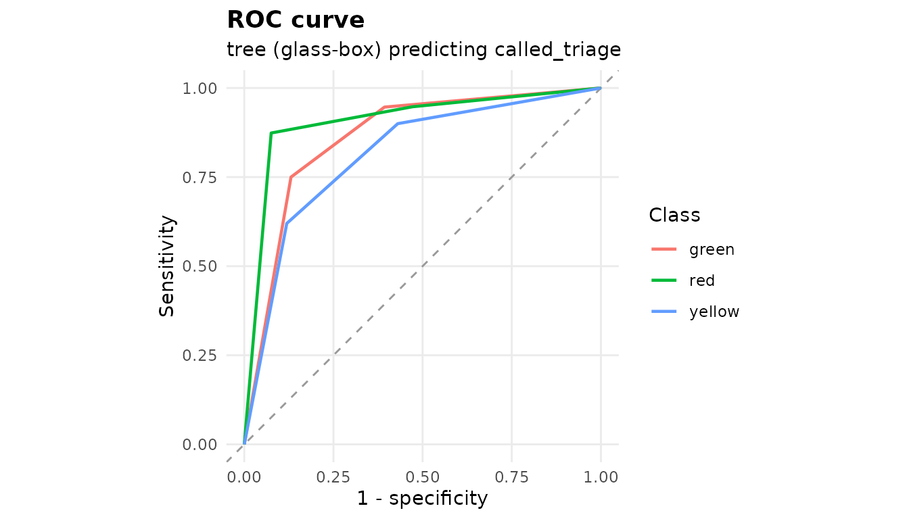
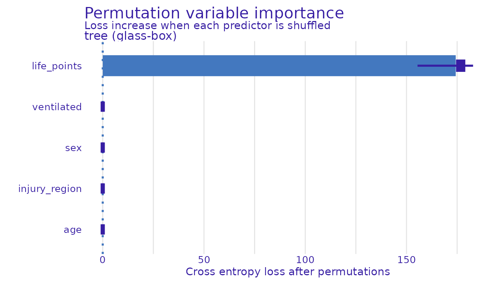
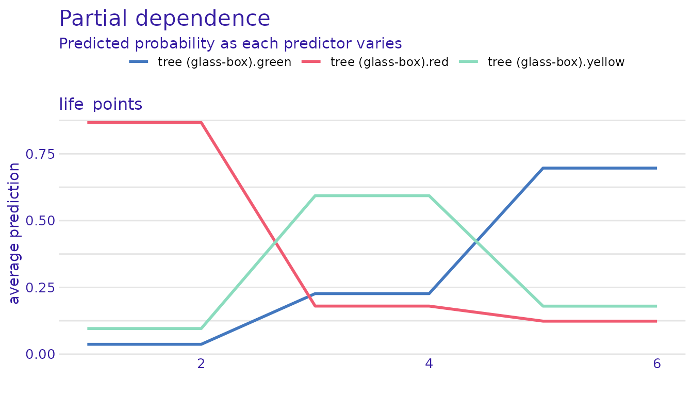

The model bench: open and closed boxes
Raban Heller, Gerhard Achatz
Source:vignettes/model-bench.Rmd
model-bench.RmdAn interpretable model is worth having only if you know what it costs. This article measures that: the same data, the same preprocessing, the same held-out split, scored across engines you can read and engines you cannot.
The modelling chunks require parsnip,
recipes, workflows, rsample,
tune, yardstick, dials,
hardhat, rpart, glmnet and
ranger. The explanation chunks additionally require
DALEX and DALEXtra. Sections with missing
optional packages are not executed; the table below records which parts
are available in this build.
data.frame(section = c("Model comparison", "Explanations"),
available = c(bench_ready, explain_ready))
#> section available
#> 1 Model comparison TRUE
#> 2 Explanations TRUEDefine the target before comparing models
The first thing to get right is what to predict.
The card’s true sighting category is a deterministic function of life points by construction: red is 1–4, yellow 5–8, green 9–12. Any engine recovers that rule exactly, so a leaderboard on it is a row of ones.
co <- sdt_synthetic_cohort(n = 400, seed = 1)
trivial <- sdt_fit(co, target = "triage", engine = "tree",
tune = FALSE, folds = 3, seed = 1, verbose = FALSE)
sdt_metrics(trivial)
#> # A tibble: 4 × 3
#> .metric .estimator .estimate
#> <chr> <chr> <dbl>
#> 1 accuracy multiclass 1
#> 2 f_meas macro 1
#> 3 kap multiclass 1
#> 4 roc_auc hand_till 1What a participant calls is a different matter. The
published evaluation reports how often participants agreed with the
card: 88% for red, 59% for yellow, 71% for green.
sdt_add_decisions() generates calls with those hit rates,
weighting miscalls toward neighbouring categories, since red is mistaken
for yellow far more often than for green.
labelled <- sdt_add_decisions(sdt_synthetic_cohort(n = 800, seed = 5),
seed = 6)
table(true = labelled$triage, called = labelled$called_triage)
#> called
#> true green red yellow
#> green 166 27 46
#> red 13 318 31
#> yellow 45 34 120Agreement between the two is well above chance and well short of perfect, which is what makes it a real prediction problem:
sdt_consistency_score(labelled$triage, labelled$called_triage)
#> # A tibble: 1 × 4
#> .metric .estimator .estimate n
#> <chr> <chr> <dbl> <int>
#> 1 kap multiclass 0.618 800Kappa accounts for agreement expected from the marginal category frequencies. Raw agreement alone can look high when one category dominates. If both raters always choose the same category, agreement is 100% but kappa is undefined; there is no variation with which to assess discrimination.
The bench
sdt_workflowset() fits every installed engine to the
same data through the same recipe and returns one leaderboard. Engines
whose package is missing are skipped and named, not silently
dropped.
board <- sdt_workflowset(
labelled, target = "called_triage",
engines = c("tree", "glmnet", "ranger"),
tune = FALSE, folds = 3, seed = 1, verbose = FALSE
)
board
#> # A tibble: 12 × 5
#> engine class_box .metric .estimator .estimate
#> <chr> <chr> <chr> <chr> <dbl>
#> 1 tree glass accuracy multiclass 0.776
#> 2 tree glass f_meas macro 0.746
#> 3 tree glass kap multiclass 0.651
#> 4 tree glass roc_auc hand_till 0.841
#> 5 ranger black accuracy multiclass 0.746
#> 6 ranger black f_meas macro 0.700
#> 7 ranger black kap multiclass 0.600
#> 8 ranger black roc_auc hand_till 0.817
#> 9 glmnet glass accuracy multiclass 0.692
#> 10 glmnet glass f_meas macro 0.603
#> 11 glmnet glass kap multiclass 0.495
#> 12 glmnet glass roc_auc hand_till 0.809class_box is the column the article is about.
glass marks models whose decision rule can be read off
directly: a single decision tree, a penalised multinomial regression.
black marks models that cannot be, however good.
attr(board, "skipped")
#> character(0)The fitted models come back attached, so the winner can be interrogated without refitting:
Read the comparison
The question is not which engine wins. It is how much is given up by choosing one you can read.
auc <- board[board$.metric == "roc_auc", ]
glass <- max(auc$.estimate[auc$class_box == "glass"])
black <- max(auc$.estimate[auc$class_box == "black"])
c(best_glass_box = glass, best_black_box = black, difference = glass - black)
#> best_glass_box best_black_box difference
#> 0.84145363 0.81741541 0.02403822The printed gap describes this synthetic sample, split and set of fixed hyperparameters. Its sign and size are outcomes of the example, not a general claim that one model family is superior. Selecting the best engine using this comparison also requires a separate final evaluation for an unbiased assessment.

ROC curves, one per class, for the leading model. Synthetic demonstration.
Explaining both the same way
A glass-box model can be read directly, but a black-box one cannot, so the only way to put them side by side is to explain both from the outside. Permutation importance does that: it asks how much worse a model gets when a predictor is shuffled, which is defined identically for every engine.
sdt_importance(models[[best]], n_permutations = 5)
Permutation variable importance for the leading model. Synthetic demonstration.
Agreement between importance profiles does not establish a causal explanation. Correlated predictors, model instability and the evaluation sample can affect these summaries. Inspect the predictive results and the data-generating assumptions alongside each explanation.
sdt_profile(models[[best]], variables = "life_points")
Partial dependence of predicted probability on life points. Synthetic demonstration.
For a single casualty, sdt_shap() decomposes one
prediction into per-predictor contributions: not “what does this model
use”, but “why this casualty”.
Caveats
Everything above runs on synthetic data whose structure is known,
because it was generated. That is useful for demonstrating the bench and
useless as evidence about real mass-casualty decision-making. With a
real seed cohort, sdt_synthesise() produces a synthetic
candidate and sdt_synthesis_utility() assesses utility.
Neither establishes anonymity or permission to release data; privacy
assessment and disclosure review are separate tasks.
Software environment
sessionInfo()
#> R version 4.6.1 (2026-06-24)
#> Platform: x86_64-pc-linux-gnu
#> Running under: Ubuntu 26.04.1 LTS
#>
#> Matrix products: default
#> BLAS: /usr/lib/x86_64-linux-gnu/openblas-pthread/libblas.so.3
#> LAPACK: /usr/lib/x86_64-linux-gnu/openblas-pthread/libopenblasp-r0.3.32.so; LAPACK version 3.12.0
#>
#> locale:
#> [1] LC_CTYPE=C.UTF-8 LC_NUMERIC=C LC_TIME=C.UTF-8
#> [4] LC_COLLATE=C.UTF-8 LC_MONETARY=C.UTF-8 LC_MESSAGES=C.UTF-8
#> [7] LC_PAPER=C.UTF-8 LC_NAME=C LC_ADDRESS=C
#> [10] LC_TELEPHONE=C LC_MEASUREMENT=C.UTF-8 LC_IDENTIFICATION=C
#>
#> time zone: UTC
#> tzcode source: system (glibc)
#>
#> attached base packages:
#> [1] stats graphics grDevices utils datasets methods base
#>
#> other attached packages:
#> [1] sandtablR_0.0.0.9000
#>
#> loaded via a namespace (and not attached):
#> [1] tidyselect_1.2.1 DALEX_2.5.4 timeDate_4052.112
#> [4] dplyr_1.2.1 farver_2.1.2 S7_0.2.2
#> [7] fastmap_1.2.0 digest_0.6.39 rpart_4.1.27
#> [10] timechange_0.4.0 lifecycle_1.0.5 yardstick_1.4.0
#> [13] survival_3.8-6 kernlab_0.9-33 tailor_0.1.0
#> [16] magrittr_2.0.5 compiler_4.6.1 rlang_1.3.0
#> [19] sass_0.4.10 tools_4.6.1 plotrix_3.8-14
#> [22] utf8_1.2.6 yaml_2.3.12 data.table_1.18.6.1
#> [25] knitr_1.52 labeling_0.4.3 htmlwidgets_1.6.4
#> [28] xgboost_3.2.1.1 DiceDesign_1.10 RColorBrewer_1.1-3
#> [31] earth_5.3.6 parsnip_1.6.1 withr_3.0.3
#> [34] purrr_1.2.2 workflows_1.3.0 desc_1.4.3
#> [37] nnet_7.3-20 grid_4.6.1 DALEXtra_2.3.1
#> [40] tune_2.1.0 sparsevctrs_0.3.6 future_1.80.0
#> [43] ggplot2_4.0.3 globals_0.20.0 scales_1.4.0
#> [46] iterators_1.0.14 MASS_7.3-65 cli_3.6.6
#> [49] rmarkdown_2.32 ragg_1.5.2 generics_0.1.4
#> [52] otel_0.2.0 future.apply_1.21.0 cachem_1.1.0
#> [55] splines_4.6.1 dials_1.4.4 parallel_4.6.1
#> [58] ingredients_2.3.0 vctrs_0.7.3 hardhat_1.4.3
#> [61] glmnet_5.1 Matrix_1.7-5 jsonlite_2.0.0
#> [64] Formula_1.2-6 listenv_1.1.0 systemfonts_1.3.2
#> [67] foreach_1.5.2 gower_1.0.2 tidyr_1.3.2
#> [70] jquerylib_0.1.4 recipes_1.4.0 glue_1.8.1
#> [73] parallelly_1.48.0 pkgdown_2.2.1 plotmo_3.7.1
#> [76] codetools_0.2-20 rsample_1.3.2 lubridate_1.9.5
#> [79] gtable_0.3.6 shape_1.4.6.1 tibble_3.3.1
#> [82] pillar_1.11.1 furrr_0.4.0 htmltools_0.5.9
#> [85] ipred_0.9-16 lava_1.10 R6_2.6.1
#> [88] textshaping_1.0.5 evaluate_1.0.5 lattice_0.22-9
#> [91] bslib_0.12.0 class_7.3-23 Rcpp_1.1.2
#> [94] prodlim_2026.03.11 ranger_0.18.0 xfun_0.62
#> [97] fs_2.1.0 pkgconfig_2.0.3